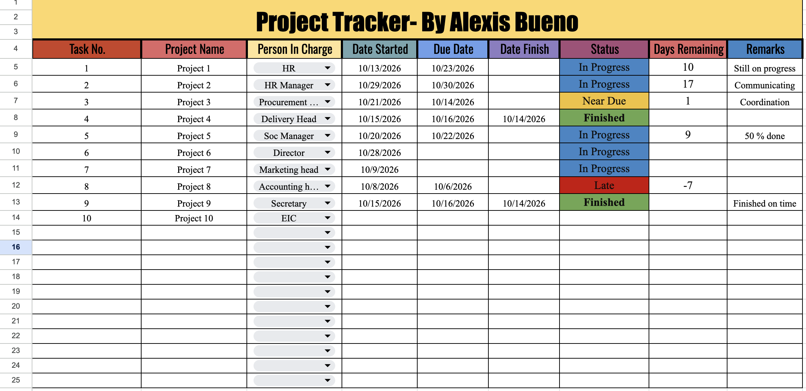

People & Culture
Psychology-informed communication, recruitment support, and employee-centered thinking.
HELLO, I'M ALEXIS BUENO
A versatile emerging professional combining psychology, HR operations, administrative support, and project coordination to help people and organizations work better.
01 — ABOUT ME
I am a BS Psychology student at the Polytechnic University of the Philippines – Sto. Tomas Campus, with a growing interest in human resources, organizational development, and people operations.
My HR internship and student leadership roles have given me hands-on experience in documentation, attendance monitoring, data management, recruitment support, event coordination, and workplace communication.
I enjoy turning complex tasks into organized processes, learning new tools, and contributing to work that makes a real difference. I bring initiative, attention to detail, and a people-oriented mindset to every project.
Discover my experience ↗Psychology-informed communication, recruitment support, and employee-centered thinking.
Documentation, records management, attendance data, and Excel-based tracking.
Event coordination, creative materials, teamwork, and leadership.
02 — EXPERIENCE
Every role has taught me something about responsibility, collaboration, and continuous improvement.
UAM Philippines Inc.
Supporting daily HR and administrative activities while developing practical knowledge of workplace systems, employee services, and HR processes.
Psychology Society · PUP-STC
Coordinated student activities, supported event planning and execution, and worked with committees to deliver organized campus programs.
Iskonnovator Student Community
Supported external communication and coordination, helping foster professional relationships and collaborative activities.
Google Developer Student Club · PUP-STC
Supported community engagement, communication, and student participation in a technology-focused learning environment.
03 — BEHIND THE WORK
A visual look at the projects, people, and experiences that have shaped my journey.
Add numbered photos to the images folder to expand this gallery.
04 — SELECTED WORK
A selection of design, planning, and data organization work.
Visual materials created for presentations, activities, communication, and projects. This gallery automatically loads numbered Canva image files.

An Excel-based tool developed during my HR internship to organize and monitor progress over time. The project involved researching formats, planning a clear structure, and building a practical tracking solution.
Only share work samples that do not contain confidential company or employee information.
Planning layouts and calendar visuals. Add or remove numbered files as your portfolio grows.
05 — SKILLS & EDUCATION
Polytechnic University of the Philippines – Sto. Tomas Campus
Consistent Dean's / President's Lister.
LET'S CONNECT
I'm open to meaningful opportunities, professional collaborations, and projects where organization, communication, and thoughtful execution make a difference.